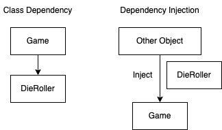

Sometimes one class may depend on another class for some functionality. For example, we could be writing a game and have a class for rolling a die and a game class that depends on this die rolling class for it's results. A way to write this code could be:
public class DieRoller
{
private readonly Random _random;
public DieRoller()
{
_random = new Random();
}
public int RollDie()
{
return _random.Next(1,7);
}
}
public class Game
{
private readonly DieRoller _dieRoller;
public Game()
{
_dieRoller = new DieRoller();
}
public void Play()
{
Console.WriteLine($"Die roll: {_dieRoller.RollDie()}");
}
}
Here, Game has a dependency on DieRoller. This dependency means that the Game and DieRoller classes are very tightly coupled, which comes with some issues:
Dependency Injection (DI) is a design pattern that allows us to break occurences of this tight coupling between classes. It's a way of implementing Inversion of Control (IoC). Simply: instead of an object having to create it's own dependencies (the above example) another object injects these dependencies into the object.
Note: DI is related to the D in SOLID.
We can modify the example above to use DI to provide an implmentation of the DieRoller class to the Game class as follows.
First, we'll create an interface for the DieRoller class and have it implement it:
public interface IDieRoller
{
public int RollDie();
}
public class DieRoller : IDieRoller
{
private readonly Random _random;
public DieRoller()
{
_random = new Random();
}
public int RollDie()
{
return _random.Next(1,7);
}
}
Next, we'll update the Game class to reference the interface instead of the concrete implementation and have it provided in it's constructor as a parameter:
public class Game
{
private readonly IDieRoller _dieRoller;
public Game(IDieRoller dieRoller)
{
_dieRoller = dieRoller;
}
public void Play()
{
Console.WriteLine($"Die roll: {_dieRoller.RollDie()}");
}
}
We need to make some changes in the code that instantiates the Game class (e.g. the Program.cs file) but first we need to install the nuget package: Microsoft.Extensions.Hosting
Once this package is included we can use it to create a DI container - this is the other thing that will inject the dependencies for us. But for this container to know how to inject our dependencies we need to configure it to know about our services. For our example, we do that with the following code:
using var host = Host.CreateDefaultBuilder()
.ConfigureServices((context, services) => {
services.AddTransient<IDieRoller, DieRoller>();
services.AddTransient<Game>();
})
.Build();
Host.CreateDefaultBuilder() gives us an application host. The host is an object that encapsulates an applications resources and lifetime functionality which includes DI.
The call to ConfigureServices registers the services for DI. The first service we register tells the DI container which implementation of IDieRoller to use whenever it encounters references to IDieRoller. The second registered service is just the concrete implementation of Game.
To run our application using the host we can use the following code:
var game = host.Services.GetRequiredService();
game.Play();
Note that we haven't explicity instantiated a DieRoller object when creating the Game object - our DI container takes care of this for us.
In the above example when we registered the services we used the AddTransient() function. This means we are specifiying that this service should have a transient lifetime. There are three different service lifetimes, described in the table below.
| Lifetime | Registration Function | Description | Use |
|---|---|---|---|
| Transient | AddTransient() | Created each time thay are requested. So, using our example, each time we instantiate a new Game object a new DieRoller object would also be created. | Lightweight, stateless services that don't share resources. |
| Scoped | AddScoped() | In web applications, created once per client request. Disposed at the end of the request. | Stateful services or a service that shares a resource within a context (e.g. web request). They ensure each request gets its own instance of the service, avoiding conflicts between multiple requests (e.g. when communicating with a database). |
| Singleton | AddSingleton() | Created the first time they are requested. Subsequent requests for the service use the same instance and it's disposed of when the application shuts down. | Useful when there is a stateless service or a shared resources that should be accessed consistently across mutliple requests. For example, logging. |
I've created a github repo here that contains the example code in this post containing two runnable solutions - one without DI and one with DI.